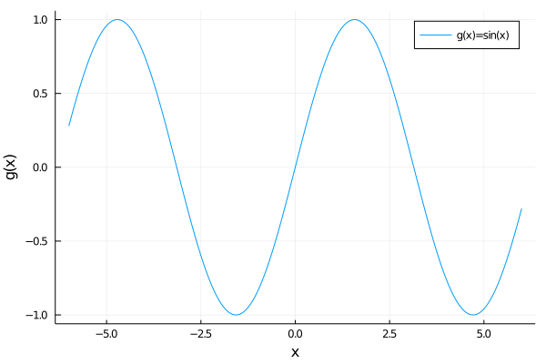

Plotting complex functions with Julia
TLDR: scroll down for cool 3D plots.
Mathematical introduction
In this post we wish to visualize complex valued functions of a single complex variable, i.e. functions \(f : \mathbb{C} \to \mathbb{C}\) taking a complex number \(z\) to \(f(z)\), e.g. \(f(z)=z^2\). The usual manner of visualisation for a real function \(g : \mathbb{R} \to \mathbb{R}\) is to look at its graph $$\Gamma_g = \set{(x,g(x))\mid x\in \mathbb{R}}\subset \mathbb{R}\times \mathbb{R},$$ that is look at each number \(x \in \mathbb{R}\) and place a point at height \(g(x)\) over it. For instance, for \(g(x)=\sin(x)\), we get the usual graph:

How can we do this for complex valued functions?
Recall that a complex number \(z\) can be written uniquely as in terms of its real and imaginary parts \(z=a+ib\), for \(a,b \in \mathbb{R}\). Therefore, we can in some sense identify the complex numbers \(\mathbb{C}\) with pairs of real numbers \(\mathbb{R}^2\). If we rewrite our complex function \(f : \mathbb{C} \to \mathbb{C}\) instead as a function \(f : \mathbb{R}^2 \to \mathbb{R}^2\), we see that the graph of the function $$\Gamma_f = \set{(v,g(v)))\mid v\in \mathbb{R}^2}\subset \mathbb{R}^2\times \mathbb{R}^2,$$ lives in a 4-dimensional space, hence we cannot visualize it!
While we can't see the whole graph of the function, we can still get part of the way there. One approach to visualizing a complex function is using domain coloring. In this post, we will aim to instead visualize the modulus of a complex function.
Recall that for any complex number \(z=a+ib\in \mathbb{C}\), we have the modulus \(|z|=\sqrt{a^2 +b^2} \in \mathbb{R}\). This gives us a new function \(|\cdot|:\mathbb{C}\to \mathbb{R}\), which we will call the modulus function. By composing the original function \(f\) with \(|\cdot|\), we get a new function $$|f| : \mathbb{C}\xrightarrow{f} \mathbb{C} \xrightarrow{|\cdot|} \mathbb{R}.$$ Now this can be viewed as a function \(|f| : \mathbb{R}^2 \to \mathbb{R} \), and so its graph is $$\Gamma_{|f|} = \set{(v,|f(v)|)\mid v\in \mathbb{R}^2}\subset \mathbb{R}^2\times \mathbb{R},$$ which lives in a 3-dimensional space and can therefore be visualized!
Using Julia for plotting
Since we now know that for a complex function \(f : \mathbb{C} \to \mathbb{C}\) we can plot its modulus \(|f| \colon \mathbb{R}^2 \to \mathbb{R}\) (where we identified \(\mathbb{C}\) and \(\mathbb{R}^2\)). We will do this using the programming language Julia. Julia has two advantages in the current context:
- It supports complex numbers for the complex valued functions we will want to visualize (e.g. sums, exponents, \(\sin, \exp,\) ...), and
- it can use plotly to create nice interactive 3D plots that can be shared in the browser.
One last comment before we get to the plotting: taking the modulus can result in very large numbers, making it hard to see the structure for smaller values, we therefore plot scaled versions using \(\ln(1+|f(z)|)\) or \(\min(|f(z)|,4)\) instead. Let's get plotting!
-
First we plot the modulus of the polynomial \(f(z)=z^6 -2z+5\), or rather \(\ln(1+|f(z)|)\). The Julia code is giving the following 3d graphic:
Recognize the 6 zeros of the function, as we would expect from the fundamental theorem of algebra. -
Next we plot the meromorphic function \(f(z)=(z^2+2)(z^2-3)/(z^2)\):
Notice the pole (of order 2) at 0, and the 4 roots of the polynomial. -
Now we turn to \(f(z)=e^{-1/z}\):
Notice the essential singularity at \(z=0\). -
Next let's look at \(f(z)=\sin(z)\):
where we can see that, while the zeros along the real line repeat with period \(\pi\), the modulus grows fast in the imaginary direction. -
Finally, we visualize the Riemann zeta function \(\zeta(s)\):
Notice the zeros lining up on the \(\mathfrak{Re}(s)=1/2\) line, as predicted by the famous Riemann hypothesis!
We've now seen many 3d plots of the modulus of a complex function. Hopefully this should give you some sort of new intuition for how complex valued functions behave. To really complete the vizualisations done here, one should also plot the argument \(\theta(f)\) of the function. If you looked at the domain coloring technique from above, you saw that this could be visualized using coloring, which is the next natural step to do. However, we have not found a satisfacory way to do so with Julia and plotly so far.